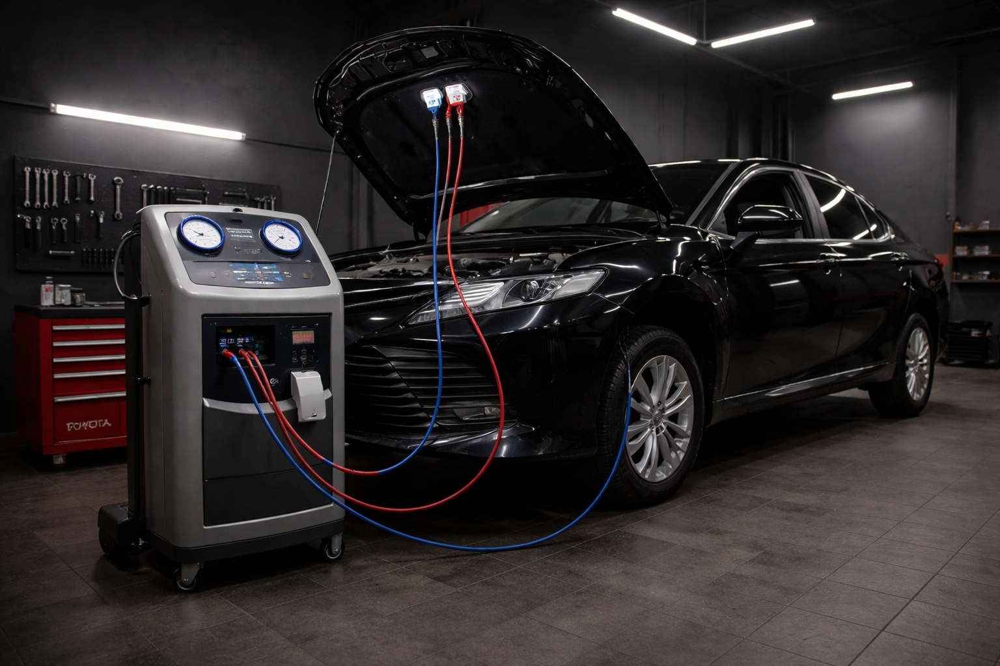

Профессиональная диагностика, заправка и очистка системы кондиционирования Toyota для стабильной работы, эффективного охлаждения и комфортного микроклимата в салоне.
Регулярное обслуживание кондиционера помогает сохранить эффективность охлаждения, продлить срок службы компрессора и избежать неприятных запахов в салоне. Мы проверяем состояние системы, контролируем герметичность и выполняем обслуживание с учетом особенностей автомобилей Toyota.

Среднее время обслуживания кондиционера — от 40 минут до 1,5 часов.
Стоимость зависит от объема работ, состояния системы, необходимости заправки и дополнительных расходных материалов.